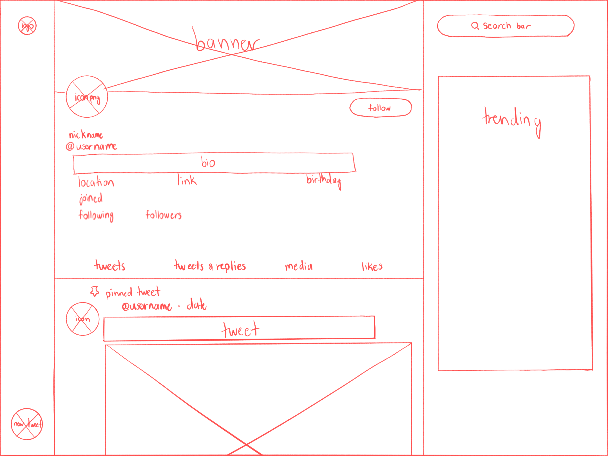

-
Using the favorite website you chose in homework 1, create a wireframe for one page of it using pen/paper, PowerPoint, or any your tool of choice. (use the 'img' tag!) Make sure to let us know what the name of your website is (Use the 'p' tag!)

-
Try to improve the website you've chosen, and create a redesigned wireframe of one page for the same website using the principles of visual hierarchy that you learned from the article.

-
What is the goal of the website? Who is it intended for? How does the design accomplish this? Write 2-3 sentences answering these questions. (Use the 'p' tag again!)
The goal of my chosen website, Twitter, is to be a social media platform that allows people to share their short-form thoughts and media with a large audience. Twitter tries to accomplish this with design choices such as heavily emphasizing the Trending tab, which promotes popular topics or news stories in order to encourage further discussion. Users can also customize their own profiles and visit others' profiles, with options to filter through different types of posts like media posts, replies, original posts, and liked posts.
-
Write 2-3 sentences about what problems your redesign addressed, and how it solved them.
In my redesign, I tried to emphasize the "Tweet" button by expanding the sidebar and increasing the size of the button, as the original "New Tweet" button is pretty small and hard to read. I also hid some features on the profile under a clickable tab, since they clutter the page and aren't super important to interacting with other users. Finally, I added a media gallery to the sidebar for easier access to a user's media posts and hid the Trending tab, as when you're visiting someone's profile, you're likely looking to interact with said user instead of browsing through Trending as you might on your homepage.
NOTE: Make sure to include the wireframe images in the website and don't just put it in your assets folder!
Your wireframes should look something like this: